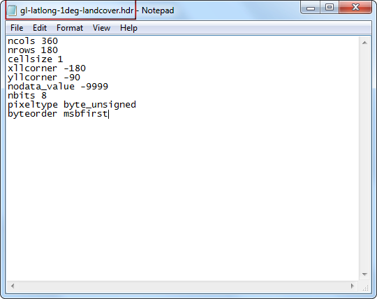

在 QGIS 中開啟 BIL、BIP 或 BSQ 格式檔案
在處理遙測和科學資料時，常會遇到像是 BIL、BIP 或 BSQ 類型的格式。QGIS 用來讀取影像資料的 GDAL 函式庫有支援此類格式，但它沒有辦法直接開啟這些檔案。這裡我們要展示如果從此格式建立相關的支援檔案，讓它們可以在 QGIS 中讀取。
波段依行交錯排列 (Band interleaved by line，BIL)、波段依像素交錯排列 (Band interleaved by pixel，BIP)，與波段序排列 (Band sequential，BSQ) 是三種常用於多波段影像儲存的格式。(更多資訊請參考這裡)
一般來說，這些檔案都會附有一個 .hdr 檔。如果你的資料集之中有 .hdr 檔，請務必確認 .bil、.bsq 或 .bip 的主檔名與 .hdr 檔相同，而且他們必須在同一個資料夾之中。舉例來說，如果有個檔案名稱為 image.bil，伴隨的檔案應為 image.hdr，而且會與 image.bil 位在相同資料夾。如此一來，當你選擇 ，然後開啟 image.bil 時，就不會出現任何問題。
有些時候，這些檔案偏偏就是沒有 .hdr 檔。這種情況下，你需要利用本教學的方法自己創造一個才行。
操作流程
解壓縮並取出 .bsq 檔：如使用 Windows，可以使用 7-Zip 讀取和解壓縮 .gz 檔。你會看到壓縮檔中只有一個叫做 gl-latlong-1deg-landcover.bsq 的 .bsq 檔，沒有 hdr 檔。

如果你嘗試在 QGIS 中開啟 gl-latlong-1deg-landcover.bsq 的話，會有錯誤訊息顯示。

如要克服此錯誤，我們得自己創造一個副檔名為 .hdr 的檔案。hdr 意味著檔頭（header），內含著資料集的結構以及各種資訊。這些資訊通常可以在資料集的詮釋資料（Metadata）中找到，如果你連詮釋資料都沒有，找看看資料來源的網站或文件說明有沒有提供。有些資訊就算你不知道，也可以用猜的。在本例中，資料的下載頁面有提供連結至詮釋資料，把它下載下來然後開啟它。

.hdr 檔必須要是純文字檔案，並且編排為以下的格式才行。我們已經找到某些參數了，但其他的還需要花點心力。格式的細節請參考這裡。
ncols <number of columns or width of the raster>
nrows <number of rows or height of the raster>
cellsize <pixel size or resolution>
xllcorner <X coordinate of lower-left corner of the raster>
yllcorner <Y coordinate of the lower-left corner of the raster>
nodata_value <pixel value to be ignored>
nbits <number of bits per pixel>
pixeltype <type of values stored in a pixel, typically float or integer>
byteorder <byte order in which image pixel values are stored, msb or lsb>
打開文字編輯器，然後依照前一個步驟的註明的格式輸入，再把檔案另存為 gl-latlong-1deg-landcover.hdr。務必確認你的檔名結尾不是 .txt。在文字檔中的某些值很容易理解：ncols 和 nrows 是影像的行數和每行的像素數目，可以從詮釋資料找到；cellsize 是像素解析度，詮釋資料中為 1。左下角的 X 與 Y 座標（xllcorner 和 yllcorner）要靠我們決定，由於影像覆蓋全球，又使用經緯度編排，xllcorner 和 yllcorner 可以分別設為 -180 和 -90。無資料值（nodata_value）的資訊也找不到，用猜的話 -9999 是個較保險的數值。從詮釋資料中，我們還可找到像素格式（Pixel Format）是 Byte，所以 nbits 要填上 8，然後 pixeltype 則為 **byte_unsigned**（無號位元組）。我們也沒有位元組順序（byteorder）的資訊，所以來試試看 msbfirst（最高有效位）。你也可以從這裡下載正確格式的 hdr 檔。

現在我們有檔頭檔案了，把它移到與 gl-latlong-1deg-landcover.bsq 相同的目錄下，然後再 QGIS 中選擇 ，選擇 gl-latlong-1deg-landcover.bsq 作為輸入檔案然後按下 開啟。

接下來的視窗會要你選擇 CRS。由於檔案是以經緯度編排，這邊的 CRS 要選 WGS84 EPSG:4326。最後，你就可以看到 QGIS 已經載入本資料了。